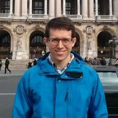

Biosketch
I am a research scientist in optical sensing for soft matter characterization and cell biology with over ten years of optics laboratory experience. My strategy is to merge optical technologies and custom software into sensing systems that are designed to address specific problems. To do this, I work directly with biologists and chemists to identify the shortcomings in their measurement tools and design the solutions that effectively meet their needs. I benefit greatly from my multidisciplinary background, which has included topics such as fundamental optics, information theory and signal processing, software design, and materials science.
For my current project I am developing high throughput methods in single molecule fluorescence microscopy by combining smart optical design, new camera technologies, and efficient algorithms from machine learning and bioinformatics. Recently I achieved the first milestone of this work: the construction of a high-throughput, super-resolution fluorescence microscope that I designed and built myself. The next step will see the application of this microscope towards the resolution of three problems in cell biology that require extremely large datasets and automation to solve: contextual effects in the structure of eukaryotic chromatin, mapping protein distributions inside human centrioles, and establishing the genetic regulatory network behind bacterial cell shape determination.
Experience
- SystemsX.ch Transition Post-doctoral Fellow
- November, 2013 – Present
- École Polytechnique Fédérale de Lausanne (EPFL)
- Advisor: Suliana Manley
- Designed and built a high-throughput super-resolution fluorescence microscope based on the STORM imaging modality for structural biology studies. This included a novel epi-illumination design.
- Developed a statistical inference method based on polymer Monte Carlo simulations for determining the structural properties of human telomeres.
- Identified the source of a common aberration in 3D localization microscopy and published open-source software to correct for it (PLOS One).
- Graduate Research Assistant
- August 2007 – August 2013
- CREOL, the College of Optics and Photonics, University of Central Florida (UCF)
- Advisor: Aristide Dogariu
- Developed a fiber optic-based, low coherence interferometer for characterizing highly scattering soft matter systems and complex fluids (RSC Advances).
- Modeled and experimentally demonstrated an optically-controlled active medium based on forces in a random speckle. (Nature Photonics) (Optics Letters)
- Demonstrated sub-diffusive light transport in disordered photonic crystals. (Optics Express)
- Undergraduate Research Assistant
- June 2006 – August 2006
- JILA, the University of Colorado at Boulder (JILA)
- Advisor: Margaret Murnane
- Funded through the National Science Foundation Research Experience for Undergraduates
- Developed a vacuum-compatible visible light spectrometer for characterizing a Ti:Sapphire laser beam.
Education
- Doctorate (PhD), Optics
- CREOL, the College of Optics and Photonics, University of Central Florida, 2013
- Dissertation: Mesoscale Light-Matter Interactions
- Thesis Advisor: Aristide Dogariu
- Master of Science (MS), Optics
- CREOL, the College of Optics and Photonics, University of Central Florida, 2011
- Topic: Light scattering and optical sensing
- Bachelor of Science (BS), Engineering Physics
- Rose-Hulman Institute of Technology, 2007
- Specialization: Semiconductor Materials and Devices
Publications
For my full list of publications, please see my Open Researcher and Contributor ID (ORCID) page.
Teaching
- EPFL Teaching Toolkit I
- November 17, 2015
- École Polytechnique Fédérale de Lausanne (EPFL)
- One day workshop covering
- Spaced-repetition as an effective teaching strategy
- Using proper questions to help students learn
- Managing classroom disruptions
- Giving proper feedback
- Certificate of Completion
- Rose-Hulman Learning Center Tutor
- May 2004–May, 2007
- Math, physics, and chemistry tutor at the Rose-Hulman Learning Center
- Provided one-on-one tutoring in general math, science and advanced physics to college students in engineering and science degree
- Wrote practice tests for the freshmen-level physics classes at Rose-Hulman Institute of Technology
- Designed and lectured at end-of-quarter review sessions for freshmen-level physics class
Skills and Competencies
- Optics
- Light and fluorescence microscopy
- Super-resolution fluorescence microscopy
- Static and dynamic light scattering
- Laboratory optics
- Fourier and statistical optics theory
- Statistical and computational modeling
- Inverse problems
- Monte Carlo simulation
- Sparsity-promoting transformations
- Bootstrap sampling methods
- Biology
- Chromatin architecture
- Telomeres
- Software development
- Languages
- Python (full competence)
- MATLAB (full competence)
- C++ (medium competence)
- Java (low competence)
- Familiar with both imperative and functional programming styles
- Basic knowledge of object-oriented design patterns
- Technical knowledge of both Linux and Windows operating systems
- Languages